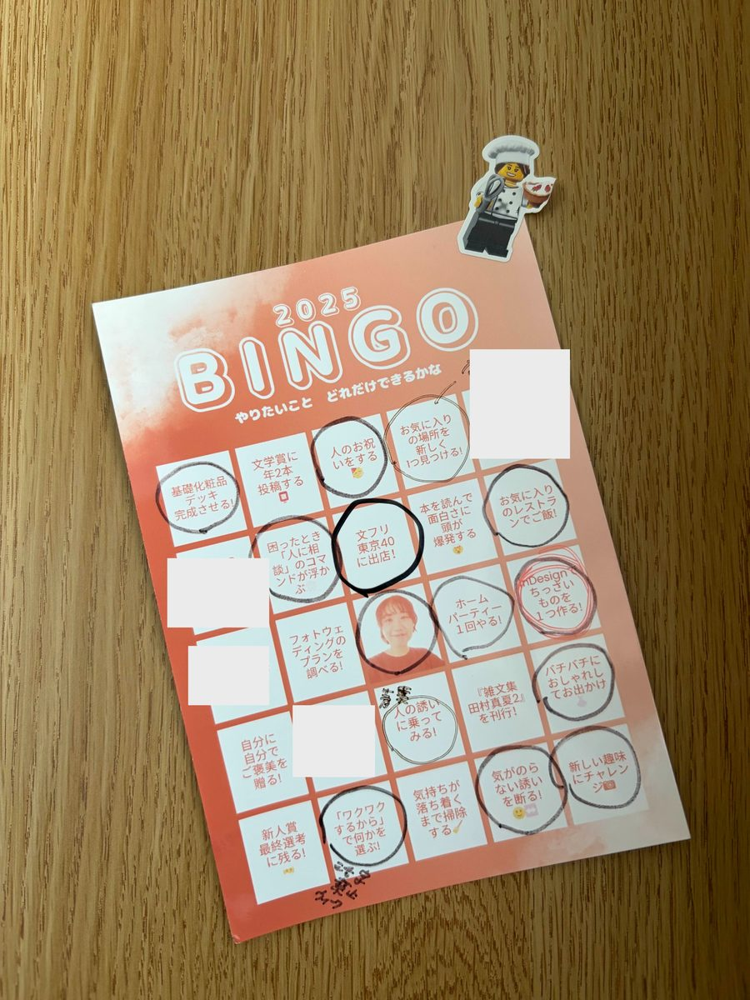
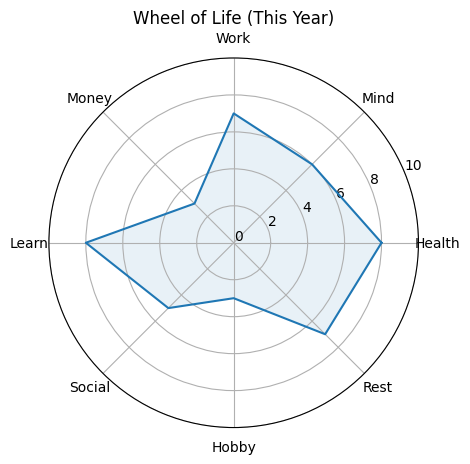
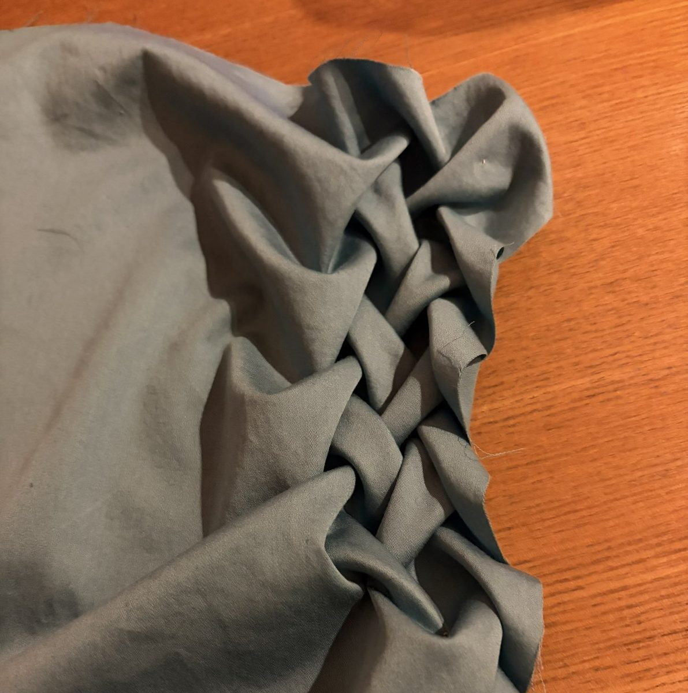
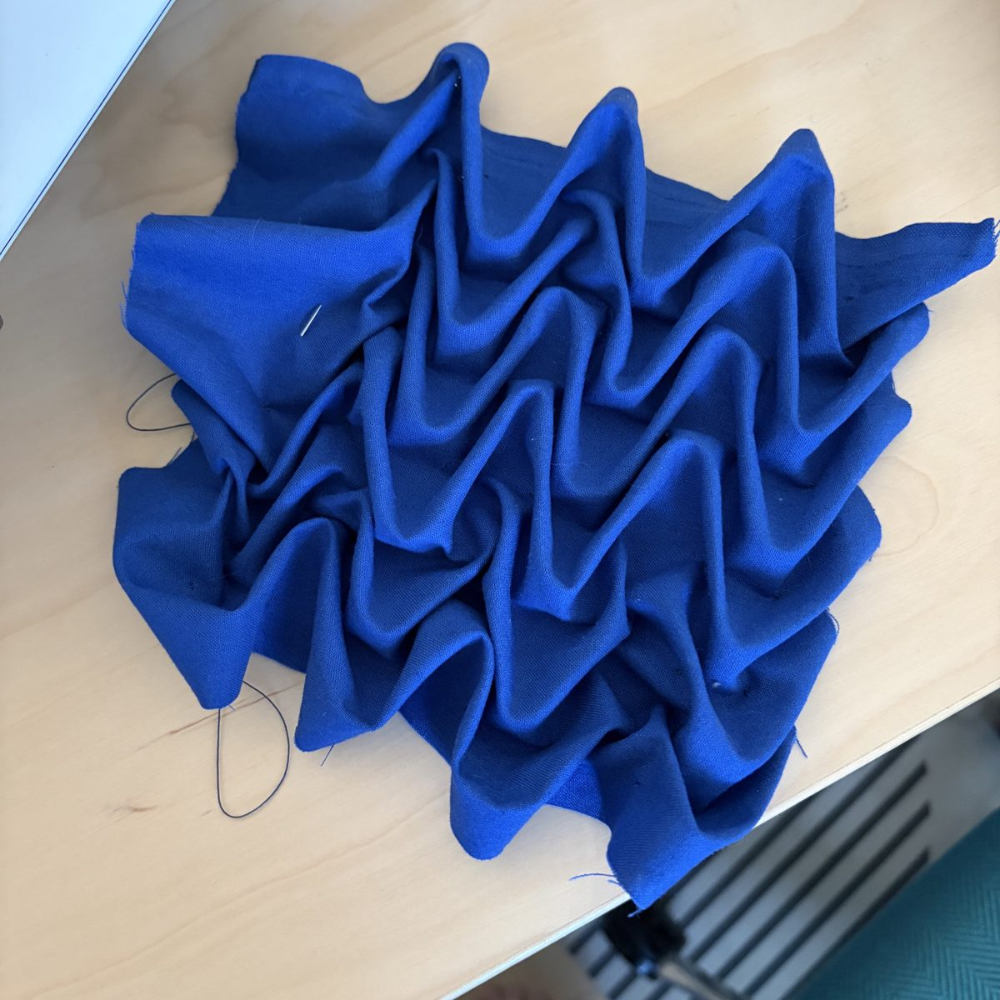

2025年12月の月報です。
わたしは一年の初めに自分の目標を立て、年末に振り返りをするのが好きです。
2025年の1月、臨床心理士・中島美鈴先生の「年間計画を立てるワークショップ」に参加しました。中島先生はADHDの方向けの時間管理を専門にされている方。そのステップひとつひとつがものすごく砕かれていて、計画を立てているうちに注意が外に向かないように工夫されていました。とても分かりやすく、参考になりました。自分の目標＞やらなければならないことの書き込み＞TODOへのスケールダウン という単純な作業でしたが、これがまあ楽しいこと！ 盛り上がったわたしは、ワークショップの後に「やりたいことBINGO」も作りました。スケールダウンしたTODOを思い出すためのアンカーとして作ったものです。そしてゲーム性がある（BINGOにする）ほうが続くような気がして、このフォーマットを直感的に選びました。

これを年末、改めて眺めてみて、自分が今年できたこと／できなかったことを考えました。
まず、できなかったこと。想定していたよりも動けないことが多かったです。わたしは年に2本小説が書けると思っていたし、そのクオリティは毎回上がると思っていた。それと同時に『雑文集 田村真夏』を書籍化することができると思っていたし、なんなら『雑文集2』を作れるつもりでいた。ついでに先延ばしにしているフォトウェディングもできちゃうかも…… そこまではできなかった。計画不足、過剰な自信があった、そういった現状が見えました。
でも、できたこともたくさんありました。『雑文集 田村真夏』を書籍化しました。InDesignで書籍を作る方法なんて去年の今ごろは全く分からなかったんですよ！ それが自分で作れるようになって、印刷所ともやりとりができて、文学フリマと通販で販売することができました。これまでほとんどお会いする機会のなかった読者の方とお会いすることができました。これまでに無い時間で、とても楽しかったです。他にも、新しい趣味（ミシン）ができたし、気が乗らない誘いは断れるようになったし、困ったときは人に助けを求めることができた。一年後の今見てみると、「そんなこともできていなかったの？」と思う。でもそれを一年の計画に入れるくらい、当時の自分は困っていた。一年でも変わるものはあるんですね。
人生は0/100ではない。BINGOを作って、時々それを眺めることで、自分をテキトーに断罪したり褒めちぎったりすることが少なくなりました。これは本当にやってよかった！ 2026年分も作ろうと思います。
ついでに、これは誰かがやっているのを見て真似したくなったので、「人生の輪」を作ってみました。中島先生のワークショップでも似たようなフレームワークを使っているので、自分にフィットするかなと思ったんです。

自分にとって大切だと思うカテゴリを6～10個ほど挙げ（わたしの場合はWork,Mind,Health,Rest,Hobby,Social,Learn,Moneyにしました）、直感的に点数を0～10でつけていきます。このグラフを載せたところで、内容の意味が分かるのはわたしだけでしょう。言葉でも少し解説してみます。まずは、図の12時の位置にある「Work」から。わたしは本当に仕事人間で、一日の大半をなんらかの仕事に費やしており、対極にある趣味（Hobby）が少ない。そして仕事をしているわりに金（Money）がない感覚がある（ワーキングプア！）。でもわたしは自分のやりたいことを仕事にできているので、健康（Health）や心（Mind）の面では充実している。それは休息（Rest）ができるようになったおかげ。今年は自分の休息の仕方を身体で勉強するワークを月に1回ほど行なっていました。そのおかげで苦手だった昼寝ができるようになり、昼寝まで行かないリラックスもしやすくなった。なにより自分にとって大切な「勉強（Learn）」がたくさんできたのが良かった！ InDesign、日本手話、いろんな新しいことを勉強できたなあ。……この図を言語化するとそんなところですかね。
自分の状況がはっきりしてくると、「今後どうしていきたいか」もおのずと見えてきますね。年始はさっそく新しい計画を立てる作業をしていました。年末に自分の棚卸をして本当によかったです。
ネクタイを製作したり、「ラティススモッキング」という立体刺繍にハマったり。たくさん手芸をした月でもありました。


友人に上村幸『布で作る立体模様 ラティススモッキング』という本をおすすめしてもらって、これがとてもわたしに合う本でした！ 手芸の本って読んでもちんぷんかんぷんであることが本当に多いのですが、これはスッと入ってきました。写真は撮っていないのですが、他にもエコバッグに刺繍をしたり、できた作品をキャンバスに貼って飾ってみたり、いろいろと楽しんでいます。クッションカバーとか作れたら嬉しいな。ラティススモッキングはしばらくハマりそうですね。
今月もとても楽しく過ごしました。手芸をして、文章を書いて、手芸をして、振り返りをして。そんなふうに過ごしたかな。本格的に寒くなってきましたから、みなさまお身体を大切に。またお会いしましょう。それじゃあ、またね！